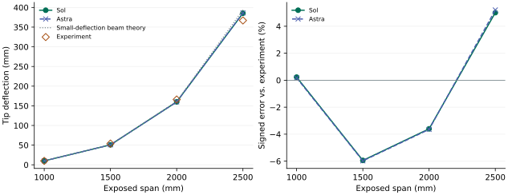

Week 2 of AI Engineering Analysis Against Test Data
Sol vs Astra on FEA
Mesh refinement and shared error in a self-weight cantilever experiment
Read the PDFDownload inputs and scoresJump to the results
Abstract
GPT-6.2 Sol and GPT-6.2 Astra independently built finite element models of an aluminum strip clamped at four exposed lengths. Both modeled large displacements under gravity in CalculiX and checked results on a refined mesh. I compared the sealed predictions with tip deflections from a 2024 laboratory study. The maximum change from mesh refinement was 0.820%. Across the four spans the two refined solutions were within 0.744 mm of one another. They erred in the same direction at 4 of four spans. At 2.5 m, the measured sag was 367 mm. The models predicted 385.37 mm and 386.12 mm. Their agreement under mesh refinement coexisted with a common gap to the physical test.

Experiment and numerical methods
One specimen, four exposed lengths
Patuelli, Cestino and Frulla tested a 6060 aluminum strip at Politecnico di Torino as part of an investigation of bending and torsion at large deflections. The strip was 3 m long with a 40 × 8 mm cross-section. Steel blocks clamped it at four positions to expose 1.0, 1.5, 2.0 and 2.5 m. This benchmark uses only the measured static tip deflections in Table 3. The original study also measured vibration frequencies and mode shapes [1].
Both operators received the reported elastic modulus (61 GPa), Poisson ratio (0.30), density (2,675 kg/m³), cross-section and lengths. The brief specified gravity along the 8 mm thickness direction and a straight, horizontal undeformed strip. Both operators idealized the root as a fixed face and omitted the unspecified masses and stiffnesses of the optical targets, shaker connection and fixture.
Independent decisions and measurement holdout
Each operator ran at high reasoning effort in a fresh context and was instructed to use only the shared brief and its assigned directory. The experiment’s title, published predictions and measured deflections were omitted from the brief. Each CalculiX container had networking disabled and mounted only its own case directory. The coordinator selected the public experiment and knew its outcome. Prior familiarity with a public benchmark remains possible.
Each operator recorded its plan before generating its inputs, then ran two prescribed meshes for all spans. Both used 3D quadratic bricks and finite-displacement equilibrium with linear-elastic aluminum. Their integration schemes, mesh densities, increment limits and verification thresholds were independently selected.
| Setup choice | GPT-6.2 Sol | GPT-6.2 Astra |
|---|---|---|
| Solid element | C3D20, full integration | C3D20R, reduced integration |
| Initial brick dimensions (mm) | 20 × 20 × 8 | 50 × 20 × 8 |
| Refined brick dimensions (mm) | 10 × 10 × 4 | 25 × 10 × 4 |
| Refined element count at 2.5 m | 2,000 | 800 |
| Initial and maximum load fraction per step | 0.20 | 0.25 |
| Mesh acceptance rule | ≤ 0.5% of refined displacement | ≤ greater of 0.02 mm and 0.5% of refined displacement |
Both runs used CalculiX 2.20 on the same local CPU host with a maximum of four CPUs per container. Sol requested four solver threads, while Astra requested one. Each used its own mesh acceptance rule. The main comparison uses the first prespecified refined solution from each operator. Astra’s later refinement is reported separately. The benchmark does not score transient vibration or material failure.
Results
Smaller elements did little to close the gap
The scorer verified both SHA-256 manifests before reading its copy of the measurement table. The error is prediction minus test. I report mean absolute percentage error across the four spans and the mean absolute residual in millimetres. These statistics describe one specimen at four lengths. Table 3 prints integer millimetres and provides no experimental uncertainty intervals for these measurements. The report uses the printed values, including 10 mm at 1 m, where relative errors are especially sensitive to rounding.
| Exposed span | Test (mm) | Sol (mm) | Astra (mm) | Sol error | Astra error |
|---|---|---|---|---|---|
| 1000 mm | 10 | 10.023 | 10.017 | +0.23% | +0.17% |
| 1500 mm | 54 | 50.790 | 50.771 | -5.94% | -5.98% |
| 2000 mm | 166 | 160.018 | 159.947 | -3.60% | -3.65% |
| 2500 mm | 367 | 385.375 | 386.119 | +5.01% | +5.21% |
| Measure | Sol | Astra |
|---|---|---|
| Initial mean absolute percentage error | 3.74% | 3.95% |
| Refined mean absolute percentage error | 3.70% | 3.75% |
| Refined mean absolute error | 6.897 mm | 7.105 mm |
| Largest initial-to-refined change | 0.327% | 0.820% |
| Solver elapsed time, eight cases | 60.0 s | 19.0 s |
| Estimated operator token cost, first pass | $0.22 | $0.68 |
What the difference in mesh bought
Sol’s refined model had 2.5 times as many elements at the longest span. Every solve completed at full gravity. Sol met its predefined mesh criterion at all four lengths. Astra initially met its rule at 2.0 m and exceeded its threshold at the other three lengths. Sol's symmetry and independent beam checks passed. For Astra, accounting for the gravity carried directly by constrained nodes reconciled the printed root force with the full strip weight. The smaller separation between the FEA predictions than between either prediction and the 2.5 m measurement points toward shared assumptions and experimental inputs as the next variables to test.
Prespecified-criterion follow-up
Astra reran the three unresolved spans using C3D20R elements of 12.5 × 5 × 2 mm with the same physical setup. It met its original tolerance on 3 of three reruns. The largest movement from its prior refined mesh was 0.140%. At 2.5 m the result moved to 386.34 mm, +5.27% against the lab. Astra’s four-span mean absolute percentage error finished at 3.78%. The three additional solves took 183.3 seconds and that operator turn added $0.55 in estimated tokens.
Direction of the error
Both models were high at 2.5 m by 5.01% and 5.21%, respectively. For the same bare strip at 2.5 m, small-deflection beam theory gives 393.72 mm. The independent finite-rotation elastica check gives 386.17 mm, roughly 7.55 mm lower. The nonlinear FE values are close to the elastica and remain about 18–19 mm above the measured sag. The comparison indicates that accounting for large displacement matters for the longest span. It leaves the residual gap unresolved.
Cost, interpretation and reproducibility
What the experiment establishes
The token estimates use recorded input, cached input and output tokens at OpenAI’s standard short-context API rates [2]. The tabulated amounts cover the two original operator turns through handoff. The solver times sum the reported CalculiX calls for the eight prescribed cases per operator and will vary with runtime conditions. Actual invoice charges and a local CPU billing rate were unavailable. The archive gives the counts and rates so readers can reproduce the estimate.
Attribution. The element integration and mesh choices were different, but both operators retained the same idealized support, material properties, gravity load and omitted fixture details. Those common assumptions can produce common errors. Simple clamp compliance would usually increase sag relative to an ideal fixed root and therefore cannot by itself explain the overprediction. For a rectangular beam under its own weight, the small-deflection scaling is δ ∝ L⁴/(Et²). The 2.5 m gap is on the order of the change from a 2.5% greater thickness or a 1.2% shorter effective span, each considered separately. These are illustrative sensitivities. Neither adjustment was used in scoring. The four measures are not independent specimens and give no basis for a general Sol or Astra ranking.
Conclusion. In this test, independently selected solid meshes gave nearly identical results despite different costs. Across the original two meshes, tip predictions changed by less than 1% for each operator. Comparison with the physical experiment shows the remaining discrepancy at the longest span.
References and evidence
- C. Patuelli, E. Cestino and G. Frulla. “A Nonlinear Beam Finite Element with Bending–Torsion Coupling Formulation for Dynamic Analysis with Geometric Nonlinearities.” Aerospace 11(4), 255 (2024), §3 and §5.1, Tables 1 and 3. doi:10.3390/aerospace11040255. Experimental values from a CC BY 4.0 article.
- OpenAI. Standard API pricing.
Scoring archive. Includes the common brief and protocol, both model proposals, sealed solver inputs and predictions, convergence evidence, measurement transcription, scoring script, cost calculation inputs and paired deltas. The separately sealed continuation documents the three Astra reruns.